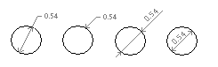

|
AddDimDiametric Method |
Creates a diametric dimension for a circle or arc given the two points on the diameter and the length of the leader line.
Signature
RetVal = object.AddDimDiametric(ChordPoint, FarChordPoint, LeaderLength)
Object
ModelSpace Collection, PaperSpace Collection, Block
The objects this method applies to.
ChordPoint
Variant (three-element array of doubles); input-only
The 3D WCS coordinates specifying the first diameter point on the circle or arc.
FarChordPoint
Variant (three-element array of doubles); input-only
The 3D WCS coordinates specifying the second diameter point on the circle or arc.
LeaderLength
Double; input-only
The positive value representing the length from the ChordPoint to the annotation text or dogleg.
RetVal
DimDiametric object
The newly created diameter dimension object.
Remarks
Different types of diameter dimensions are created depending on the size of the circle or arc, the length of the leader line, and the values of the DIMUPT, DIMTOFL, DIMFIT, DIMTIH, DIMTOH, DIMJUST, and DIMTAD system variables.
For horizontal dimension text, if the angle of the dimension line is more than 15 degrees from horizontal, and is outside the circle or arc, AutoCAD draws a hook line, also called a landing or dogleg. The hook line is one arrowhead long, and is placed next to the dimension text, as shown in the first two illustrations.
 |
This function uses the LeaderLength parameter as the distance from the ChordPoint to the point where the dimension will do a horizontal dogleg to the annotation text (or stop if no dogleg is necessary).
The LeaderLength setting will only be used during the creation of the dimension (and even then only if the dimension is set to use the default text position value). After the dimension has been closed for the first time, changing the LeaderLength value will not affect how the dimension displays, but the new setting will be stored and will show up in DXF, LISP, and ADSRX.
| Comments? |